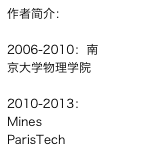
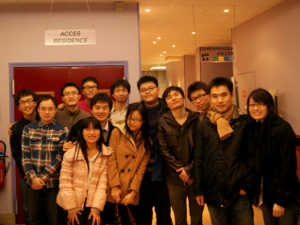

paristechinois
因为有同学要做一个项目问我要申请巴黎高科的总结，我把三年前自己写的东西拿出来看了一遍，感觉是：胡说八道误人子弟，里面的说法现在大多现在自己都不同意。不禁感慨来Mines这三年虽然知识技能语言都毫无长进，但对这所学校以至法国工程师学校的这种特殊的教育方式的看法都大相近庭了。三年前促使我选择来Mines那些因素：学校在法名声、上课轻松、早毕业、可以转工程、可以学一门新语言……现在看来要么不完全是事实，要么显得不那么重要了。在悲叹自己虚度了三年青春之余，把申请之事重新总结一下是件靠谱的事情。
1．Mines是一所特殊的学校
法国的工程师学校是一种不同于地球上其他地区的特殊的高等教育体制，而Mines又是这个系统中非常典型的特殊的学校。我现在出门在外最怕被问的问题是：你是学什么专业的？考虑到我的option叫做机械能源（Machines et Énergie），于是扭扭捏捏的回答说：学能源。然后对方一定会追问具体学什么能源，然后我更扭扭捏捏地说：就是能源专业嘛，不学哪个具体能源的。
这就是典型的法国的工程师学校所推崇的ingénieur généraliste（翻译成通用工程师？）的概念，而Mines是把这个概念推崇到极致的，虽然分了17个方向（option），但是尽力淡化之间的区别。这样做的目的是：不在一开始就对职业发展法相作太多限制，有更多的选择可以尝试，并且转行也相对方便；另外，把时间和精力投入到和专业无关但是同样重要其他技能培养：语言、合作、做报告、写简历、利用校友网络等等。
但是我对这个概念始终没有什么认同感，虽然我承认它在法国工业中的作用，以及它对学生（包括中国学生）个人发展的帮助。首先，“通用”并不意味着全能，这从Mines的课程就可以看出来，两年的课程涵盖了经济法律数学物理机械电子各种专业，但负担却比本科更轻（当然跟我个人无甚追求，以不挂为目标也有些关系），可见每一门课都浅尝辄止，比如二年级的电子课，上两个月，其中模电上了一下午，就讲了下三极管原理，连小信号模型都还没讲到就结束了。所以，要靠这些来从事技术工作是不靠谱的，就连法国人也说Mines上的课对工作基本没有帮助，倒是他们之前在prépa期间学的东西有时会用到，同样，对于中国学生，所做的技术工作往往依托于本科的背景。当然，在Mines期间找个好实习还是能学些靠谱的东西。
其次，上面所提到的Mines所强调的专业以外技能的培养，固然是重要，但这是世界上其他优秀的学校也都能提供的。我在有些课上碰到过一些TUM, TUD, IC, RWTH等欧洲其他一流学校的硕士或者博士的同学，他们各方面的素质绝不比法国的学生差，甚至更高一筹，并且他们专业上更牛。虽然Mines在法国所向披靡，但放在整个欧洲并不算突出。
第三，法国工程师教育系统的成功很大程度上依赖于企业界长久以来形成的对这些学校的认可，以及校友圈子里的互相保护：Mines的校友在招人的时候当然会偏袒自己学校的学生，在一些传统的、腐朽程度比较高的地方甚至你一生能升到什么位置也是由学校出身决定。我并不是批评校友网络这种东西有什么不好，毕竟只要人能把活干好找谁都是一样，并且确实好学校里面聪明人更多一些。但是这样做的问题是学生离开了这个圈子，到了法国以外，没有立即拿得出手的东西，竞争力就明显处于劣势，这对于我们国际学生来说特别有关系。有个同学说Mines对于法国人是个完美的选择，但对外国人来说可能还不如差一点的、专业性更强一点的学校，我对此有些同感。
虽然我觉得法国工程师教育有这些问题，但Mines并不是不值得考虑，下面说说我对这个学校喜欢和不喜欢的地方
首先，Mines确实可以提供不少机会，尤其是实习。虽然随着法国的疲软要在这里找个工作不可能像以前那样轻而易举了，但实习的情况还不是那么差，凭借学校的名声以及渗透到法国各个行业甚至海外各公司、学校、实验室的校友网络，可以相对容易的得到去这些地方实习的机会。这些实践经历可以帮助自己思考下到底想做什么（个人认为这是在Mines需要做的最重要的事）。第二，Mines的学生人数少（90~150人，每个年级不同），每个人享受到的资源更多，比如要老师介绍个实习，写个推荐信，甚至要钱做项目，都非常容易（切身经历）。另外虽然说课程比较水，但是如果真的想钻研个什么东西，毕竟学校有一坨高水平的研究人员在郊外的校区待着，有充分的人力物力资源可以利用。最后是众所周知的旅游学校的故事。我算了一下二年级的时候每月平均有一个星期不在巴黎待着：地质实习、MIG、雅典周、专业旅行、Ski-Maths （简称SM）……既然我们已经知道Mines的课学不到多少东西，那么索性到处走走也挺好。
而我不喜欢的，除了前面说的对ingénieur généraliste的概念不认同外，就是在Mines的两年太赶了，刚到学校法语还没学利索就赶着找实习，既没有技能储备有没有明确目标就开始轰炸校友，二年级实习还没做完就得找毕业实习，毕业实习一边做一边有得找工作。可以说来法国以后就两件事：找实习和做实习。这些当然都是应该做的，但是我觉得这么赶的话就缺少了积累和思考的时间。但是巴黎的大环境就是这么赶，赶着早工作、早赚钱。
所以说Mines并非对于所有人都是个好选择，不过如果Mines的这种教育方式对你还有一些初步的吸引力的话，下一步就该研究下在这里究竟可以干点什么。
前面已经说到Mines上课是浮云，但还是有一些与众不同的亮点。比如有一门叫做Mechatronics的课，其实是模拟一个产品的开发过程，这是一个很有益的锻炼，但也经常沦为最无聊的课，因为无法有效地参与到项目里；又比如Acte d’entreprendre (Entrepreneurship venture)，自己设计个项目出来做，比较像本科的时候学生会干的事；另外，在校期间还有2~3次机会参加ATHENS的交流项目，主要是用来去别的学校玩的，包括法国以外的学校。建议可以看看这个地方，有Mines所有课程的简介：
https://sgs.mines-paristech.fr/prod/sgs/ensmp/catalog/list.php?year=2A&lang=EN
注意和我们有关的是Graduate 1st year 和Graduate 2nd year的课（即二年级和三年级），这个目录里面主要就看看Fundamentals（必修课）和Specialized courses（和专业有关的选修课）
另一个值得一提的是所谓专业课（option），所有17个专业的列表在这里：
https://sgs.mines-paristech.fr/prod/sgs/ensmp/catalog/list.php?year=3A&type=DescOPTION&lang=EN，可以说Mines把世界上所有行当都归到这17个option里，但却只有2个月的课程和4个月的专业实习，因此显然是和我们平时理解的专业很不相同，事实上各个方向的课程之间区别可以忽略，但是因为找实习时会和我们（名义上）的专业有关，并且可能用到专业导师手里的关系，所以专业的选择还是有些影响的。这些option有时还不太好顾名思义，需要仔细了解的话，比较好的办法是亲自找几个option的学长问问。我只能说说我自己的option，所谓机械能源（Machines et énergie），这是Mines比较热门的一个方向，每年有十几二十个人，通常就是人数最多的一个方向了（没错十几个就是最大的了，考虑到整个年级就120人），应该说者算是一个技术型的专业，但却比较多的涉及了能源市场、政策等内容，比如各国能源结构、新能源的生命周期分析、油气市场等，两个月左右的专业课主要是参观各种电站、车厂，以及听各种电公司、气公司、核公司、油公司、咨询公司的人来学校做的报告。除此以外二年级有一门“能源系统”选修课，是本专业必上的，主要就是能源工业中用到的一些热力学。总的来说，这个option水的程度中等，内容通常站在一个比较高的高度，对具体的技术问题涉及较少，但是专业导师能帮上很多忙，可以通过实习来学些自己想学的。
2．来了Mines以后
申请时的选择虽然重要，但也只是第一步，以后这几年怎么利用每一天的时间才是走好出国这条路的关键。Mines这个地方确实容易让人迷失：一方面可以几乎什么都不做而顺利毕业；另一方面在这里可以做的事情又太多，让人不知道从何做起。于是不少人和我一样，虽然两年里去了不少地方，名义上有了不少经历，但回首起来自身并不比两年前有多少长进，这显然不是正道。
要实现在Mines学习的价值，第一步是知道自己未来要做什么，但这个问题并不容易：我们在国内的时候至少是有个专业的，到了Mines以后专业被清零，也就没有了“我是学XXX的，以后是做XXX工作的”这样的概念了。而虽然Mines提供的路很宽，但是再宽一个人也只是走其中一条路，所以走哪条路就成了一个问题。好在Mines还是能提供很多资源来帮助我们做决定，三年级下的时候有一门零学分的课，以小组讨论的形式来帮助思考这个问题，能提供不少不错的想法，但话说回来法国人所面临的问题和我们很不同，所以讨论未必能切中要害，不过其中提供的一些方法非常值得借鉴，比如找校友。虽然我对法国人利用校友圈子垄断社会资源的传统不太喜欢，但是抛开找工作找实习这样功利的目的，和校友聊一聊职业的选择，在道义上还是没有任何问题的。具体说，如果有意向想干某一行，可以找几个在这一行的校友，问问他每天都做什么工作，有什么喜欢和不喜欢的，甚至可以约出来请他喝点啤酒啥的，当面的交流显然比电话或者邮件更有效。很多校友只要不是太忙都会乐意帮忙，我经常会觉得校友的热情超过了我的想象，这可以算是法国学校规模小的一个好处。
除此以外，实习时的亲身时间也是个重要手段，毕竟实习选错行的损失还比较小。在Mines正常会有2个实习：二年级暑假3个月的工程师实习和三年级下4个月的专业实习，此外还可以选择增加一年长实习（césure），即把二年级3个月的实习延长成15个月。这个选项似乎越来越流行，据说10年前几乎是没人这么做的，但是近几年都有20%~25%的人增加这一年实习。有这一年的时间实习当然可以多尝试些不同的地方，比如去国外做个半年，但前提是找个好实习，不然一年的低端重复劳动会让人发疯的。另外有一个法国同学提起一个观点，说长实习这一年应该去做一件你这辈子都不会再有机会做的事情，这种“最后的疯狂”的想法倒也挺有意思，确实这可能是很多人享受最为一个学生的自由生活的最后机会了，今年就有人做完实习后到亚洲骑了一圈摩托。当然对大多数我们这样的普通人，长实习也还主要是为未来职业作的准备。

丁毅谈Mines

2012年1月28日星期六